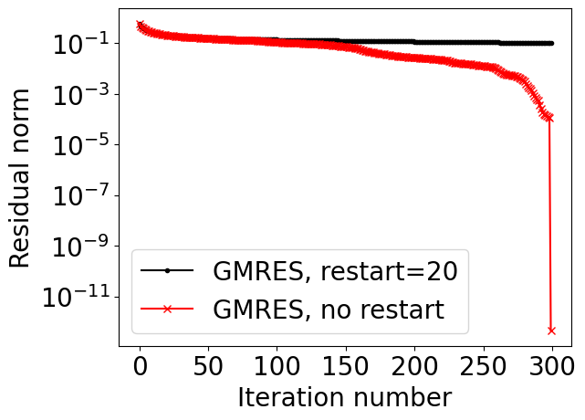

If a matrix is symmetric (Hermitian) positive definite, use CG method.
If a matrix is symmetric but indefinite, we can use MINRES method (GMRES applied to a symmetric system)
If a matrix is non-symmetric and not very big, use GMRES
If a matrix is non-symmetric and we can store limited amount of vectors, use either: GMRES with restarts, or BiCGStab (the latter of the product with A^{\top} is also available).
In a similar fashion, we can derive short-term recurrences.
A careful implementation of MINRES requires at most 5 vectors to be stored.
Difference between MINRES and CG
MINRES minimizes \Vert Ax_k - f \Vert_2 over the Krylov subspace
CG minimize (Ax, x) - 2(f, x) over the Krylov subspace
MINRES works for indefinite (i.e., non-positive definite) problems.
CG stores less vectors (3 instead of 5).
Now, let us talk about non-symmetric systems.
import scipy.sparse.linalgimport matplotlib.pyplot as pltimport numpy as npimport scipy as sp# Create a symmetric indefinite matrixn =200diag = np.ones(n)# Create a discretized 1D Helmholtz operator: -d^2/dx^2 - k^2h =1.0/n # Grid spacingk =0# Wave number# Create diagonals for tridiagonal matrixmain_diag =-2.00/h**2+ k**2# Main diagonal: -2/h^2 + k^2 off_diag =1.0/h**2# Off diagonals: 1/h^2# Create arrays for the three diagonalsmain = np.ones(n) * main_diagupper = np.ones(n) * off_diag lower = np.ones(n) * off_diag# Construct tridiagonal matrix using sparse diagonals# The error occurs because spdiags expects diagonals to be provided in a 2D array# where each row represents a diagonal. Let's stack them correctly:A = sp.sparse.spdiags([lower, main, upper], [-1, 0, 1], n, n, format='csr')# Random right-hand sidenp.random.seed(42)b = np.random.randn(n)# Lists to store residual normsres_minres = []res_cg = []def callback_minres(xk): res_minres.append(np.linalg.norm(b - A @ xk))def callback_cg(xk): res_cg.append(np.linalg.norm(b - A @ xk))# Solve with MINRESx_minres = scipy.sparse.linalg.minres(A, b, callback=callback_minres, maxiter=500, rtol=1e-10)# Try to solve with CG (may not converge due to indefiniteness)try: x_cg = scipy.sparse.linalg.cg(A, b, callback=callback_cg, maxiter=500, rtol=1e-10)except:print("CG failed to converge as expected for indefinite system")# Plot convergenceplt.figure(figsize=(8, 6))plt.semilogy(res_minres, 'b-', label='MINRES')iflen(res_cg) >0: plt.semilogy(res_cg, 'r--', label='CG')plt.xlabel('Iteration')plt.ylabel('Residual norm')plt.title('Convergence comparison for symmetric indefinite system')plt.legend()plt.grid(True)np.max(np.linalg.eigvals(A.todense()))
np.float64(-9.771444747833783)
Non-symmetric systems
The main disadvantage of GMRES: we have to store all the vectors, so the memory cost grows with each step.
We can do restarts (i.e. get a new residual and a new Krylov subspace): we find some approximate solution x and now solve the linear system for the correction:
A(x + e) = f, \quad Ae = f - Ax,
and generate the new Krylov subspace from the residual vector. This spoils the convergence, as we will see from the demo.
import scipy.sparse.linalg%matplotlib inlineimport matplotlib.pyplot as pltplt.rc("text", usetex=False)import numpy as npimport scipy as spn =300ex = np.ones(n);A =-sp.sparse.spdiags(np.vstack((ex, -(2+1./n)*ex, (1+1./n) * ex)), [-1, 0, 1], n, n, 'csr');rhs = np.random.randn(n)res_gmres_rst = []res_gmres = []def gmres_rst_cl(r): res_gmres_rst.append(np.linalg.norm(r))def gmres_rst(r): res_gmres.append(np.linalg.norm(r))sol = scipy.sparse.linalg.gmres(A, rhs, restart=20, callback=gmres_rst_cl)sol = scipy.sparse.linalg.gmres(A, rhs, restart=n, callback=gmres_rst)lim =300plt.semilogy(res_gmres_rst[:lim], marker='.',color='k', label='GMRES, restart=20')plt.semilogy(res_gmres[:lim], marker='x',color='r', label='GMRES, no restart')plt.xlabel('Iteration number', fontsize=20)plt.ylabel('Residual norm', fontsize=20)plt.xticks(fontsize=20)plt.yticks(fontsize=20)plt.legend(fontsize=20)

How to avoid such spoiling of convergence?
BiConjugate Gradient method (named BiCG, proposed by Fletcher, original paper) avoids that using “short recurrences” like in the CG method.
Idea of biconjugate gradient
Idea of BiCG method is to use the normal equations:
A^* A x = A^* f,
and apply the CG method to it.
The condition number has squared, thus we need stabilization.
The stabilization idea proposed by Van der Vorst et al. improves the stability (later in the lecture)
Let us do some demo for a simple non-symmetric matrix to demonstrate instability of BiCG method.
Use \mathcal{K}(A^* A, A^* f) to generate the subspace. That leads to square of condition number
Instead, use two Krylov subspaces \mathcal{K}(A) and \mathcal{K}(A^*) to generate two basises that are biorthogonal (so-called biorthogonal Lanczos).
The goal is to compute the Petrov-Galerkin projection
W^* A V \widehat{x} = W^* f
with columns W from the Krylov subspace of A^*, V from A (cf. with CG case).
That may lead to instabilities if we try to recompute the solutions in the efficient way. It is related to the pivoting (which we did not use in CG), and it is not naturally implemented here.
Notes about BiCG
A practical implementation of BiCG uses two-sided Lanczos process: generating Krylov subspace for A and A^{\top}
So, Jacobi method is nothing, but simple Richardson iteration with \tau=1 and left preconditioner P = D - diagonal of a matrix. Therefore we will refer to P = \mathrm{diag}(A) as Jacobi preconditioner. Note that it can be used for any other method like Chebyshev or Krylov-type methods.
Properties of the Jacobi preconditioner
Jacobi preconditioner:
Very easy to compute and apply
Works well for diagonally dominant matrices (remember the Gershgorin circle theorem!)
Useless if all diagonal entries are the same (proportional to the identity matrix)
Gauss-Seidel (as preconditioner)
Another well-known method is Gauss-Seidel method.
Its canonical form is very similar to the Jacobi method, with a small difference. When we update x_i as
Optimal selection of \omega is not trivial. If the Jacobi method converges, then \omega^* = \frac{2}{1 + \sqrt{1 - \rho_J^2}}, where \rho_J is spectral radius of Jacobi iterations
Note that \omega = 1 gives us a Gauss-Seidel preconditioner.
Preconditioners for sparse matrices
If A is sparse, one iteration of Jacobi, GS and SOR method is cheap (what complexity?).
For GS, we need to solve linear system with a sparse triangular matrix L, which costs \mathcal{O}(nnz).
For sparse matrices, however, there are more complicated algorithms, based on the idea of approximate LU-decomposition.
Remember the motivation for CG: possibility of the early stopping, how to do approximate LU-decomposition for a sparse matrix?
Remember the Gaussian elimination
Decompose the matrix A in the form
A = P_1 L U P^{\top}_2,
where P_1 and P_2 are certain permutation matrices (which do the pivoting).
The most natural idea is to use sparseL and U.
It is not possible without fill-in growth for example for matrices, coming from 2D/3D Partial Differential equations (PDEs).
What to do?
Incomplete LU
Suppose you want to eliminate a variable x_1, and the equations have the form